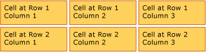
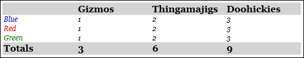
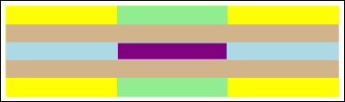
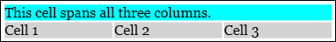

Общие сведения о таблицах
Table представляет собой элемент уровня блока, который поддерживает представление на основе сетки содержимого документа. Гибкость этого элемента делает его очень полезным, но также и более сложным для понимания и правильного использования.
В этом разделе содержатся следующие подразделы.
[Связанные разделы]
Основные сведения о таблицах
Отличие таблицы от сетки
Table и Grid совместно использовать некоторые общие функциональные возможности, но каждый из них лучше всего подходит для различных сценариев. Объект Table предназначен для использования в потоковом содержимом (см. в разделе Общие Дополнительные сведения о потоковом содержимом). Сетки лучше всего использовать внутри форм (по сути в любом месте вне потокового содержимого). В рамках FlowDocument, Table поддерживает поток такие возможности, как разбиение на страницы, Перекомпоновка столбцов и Выбор содержимого при Grid — нет. Объект Grid с другой стороны лучше всего использовать за пределами FlowDocument по многим причинам, в том числе Grid добавляет элементы на основе индекса строк и столбцов, Table — нет. Grid Элемент позволяет создавать слои дочернего содержимого, позволяя более чем одного элемента существовать внутри одной «ячейки». Table не поддерживает слои. Дочерние элементы Grid можно абсолютно позиционировать относительно области границ их «ячейки». Table не поддерживает эту функцию. Наконец Grid требует меньше ресурсов, а затем Table поэтому рассмотрите возможность использования Grid для повышения производительности.
Основная структура таблицы
Table предоставляет презентацию основе сетки, состоящий из столбцов (представленный TableColumn элементов) и строк (представленных TableRow элементов). TableColumn элементы не размещайте содержимого; они просто определяют столбцы и их характеристики. TableRow элементы должны размещаться в TableRowGroup элемент, который определяет группирование строк в таблице. TableCell элементы, которые содержат фактическое содержимое, которое должно быть представлено в таблице, должны размещаться в TableRow элемент. TableCell может содержать только элементы, которые являются производными от Block. Допустимые дочерние элементы для TableCell включают.
Note
TableCell элементы могут не содержать текстовое содержимое. Дополнительные сведения о правилах включения для потока содержимого элементы, такие как TableCell, см. в разделе Общие.
Note
Table аналогичен Grid элемент но имеет больше возможностей и, следовательно, требует больше ресурсов.
В следующем примере определяется Простая таблица 2 x 3 с помощью XAML.
<!--
Table is a Block element, and as such must be hosted in a container
for Block elements. FlowDocument provides such a container.
-->
<FlowDocument>
<Table>
<!--
This table has 3 columns, each described by a TableColumn
element nested in a Table.Columns collection element.
-->
<Table.Columns>
<TableColumn />
<TableColumn />
<TableColumn />
</Table.Columns>
<!--
This table includes a single TableRowGroup which hosts 2 rows,
each described by a TableRow element.
-->
<TableRowGroup>
<!--
Each of the 2 TableRow elements hosts 3 cells, described by
TableCell elements.
-->
<TableRow>
<TableCell>
<!--
TableCell elements may only host elements derived from Block.
In this example, Paragaph elements serve as the ultimate content
containers for the cells in this table.
-->
<Paragraph>Cell at Row 1 Column 1</Paragraph>
</TableCell>
<TableCell>
<Paragraph>Cell at Row 1 Column 2</Paragraph>
</TableCell>
<TableCell>
<Paragraph>Cell at Row 1 Column 3</Paragraph>
</TableCell>
</TableRow>
<TableRow>
<TableCell>
<Paragraph>Cell at Row 2 Column 1</Paragraph>
</TableCell>
<TableCell>
<Paragraph>Cell at Row 2 Column 2</Paragraph>
</TableCell>
<TableCell>
<Paragraph>Cell at Row 2 Column 3</Paragraph>
</TableCell>
</TableRow>
</TableRowGroup>
</Table>
</FlowDocument>
На следующем рисунке показана отрисовка этого примера.

Вложения таблицы
Table является производным от Block элемент и следует общим правилам для Block элементов уровня. Объект Table элемент может содержаться в любом из следующих элементов:
Группирование строк
TableRowGroup Элемент предоставляет способ произвольного группирования строк в таблице; каждая строка таблицы должна принадлежать группе строк. Строки в группе часто имеют общее назначение и могут быть стилизованы в виде группы. Обычно группирование строк используется для отделения строк специального назначения, например строк названия, заголовка и нижнего колонтитула, от основного содержимого, находящегося в таблице.
В следующем примере используется XAML для определения таблицы с примененным стилем заголовка и нижнего колонтитула.
<Table>
<Table.Resources>
<!-- Style for header/footer rows. -->
<Style x:Key="headerFooterRowStyle" TargetType="{x:Type TableRowGroup}">
<Setter Property="FontWeight" Value="DemiBold"/>
<Setter Property="FontSize" Value="16"/>
<Setter Property="Background" Value="LightGray"/>
</Style>
<!-- Style for data rows. -->
<Style x:Key="dataRowStyle" TargetType="{x:Type TableRowGroup}">
<Setter Property="FontSize" Value="12"/>
<Setter Property="FontStyle" Value="Italic"/>
</Style>
</Table.Resources>
<Table.Columns>
<TableColumn/> <TableColumn/> <TableColumn/> <TableColumn/>
</Table.Columns>
<!-- This TableRowGroup hosts a header row for the table. -->
<TableRowGroup Style="{StaticResource headerFooterRowStyle}">
<TableRow>
<TableCell/>
<TableCell><Paragraph>Gizmos</Paragraph></TableCell>
<TableCell><Paragraph>Thingamajigs</Paragraph></TableCell>
<TableCell><Paragraph>Doohickies</Paragraph></TableCell>
</TableRow>
</TableRowGroup>
<!-- This TableRowGroup hosts the main data rows for the table. -->
<TableRowGroup Style="{StaticResource dataRowStyle}">
<TableRow>
<TableCell><Paragraph Foreground="Blue">Blue</Paragraph></TableCell>
<TableCell><Paragraph>1</Paragraph></TableCell>
<TableCell><Paragraph>2</Paragraph></TableCell>
<TableCell><Paragraph>3</Paragraph> </TableCell>
</TableRow>
<TableRow>
<TableCell><Paragraph Foreground="Red">Red</Paragraph></TableCell>
<TableCell><Paragraph>1</Paragraph></TableCell>
<TableCell><Paragraph>2</Paragraph></TableCell>
<TableCell><Paragraph>3</Paragraph></TableCell>
</TableRow>
<TableRow>
<TableCell><Paragraph Foreground="Green">Green</Paragraph></TableCell>
<TableCell><Paragraph>1</Paragraph></TableCell>
<TableCell><Paragraph>2</Paragraph></TableCell>
<TableCell><Paragraph>3</Paragraph></TableCell>
</TableRow>
</TableRowGroup>
<!-- This TableRowGroup hosts a footer row for the table. -->
<TableRowGroup Style="{StaticResource headerFooterRowStyle}">
<TableRow>
<TableCell><Paragraph>Totals</Paragraph></TableCell>
<TableCell><Paragraph>3</Paragraph></TableCell>
<TableCell><Paragraph>6</Paragraph></TableCell>
<TableCell>
<Table></Table>
</TableCell>
</TableRow>
</TableRowGroup>
</Table>
На следующем рисунке показана отрисовка этого примера.

Приоритет отрисовки фона
Элементы таблицы отрисовываются в следующем порядке (z-порядок от нижнего к верхнему). Этот порядок нельзя изменить. Например, для этих элементов не существует свойства "Z-порядок", которое можно использовать для переопределения этого установленного порядка.
Рассмотрим следующий пример, в котором задается цвет фона для каждого из этих элементов в таблице.
<Table Background="Yellow">
<Table.Columns>
<TableColumn/>
<TableColumn Background="LightGreen"/>
<TableColumn/>
</Table.Columns>
<TableRowGroup>
<TableRow>
<TableCell/><TableCell/><TableCell/>
</TableRow>
</TableRowGroup>
<TableRowGroup Background="Tan">
<TableRow>
<TableCell/><TableCell/><TableCell/>
</TableRow>
<TableRow Background="LightBlue">
<TableCell/><TableCell Background="Purple"/><TableCell/>
</TableRow>
<TableRow>
<TableCell/><TableCell/><TableCell/>
</TableRow>
</TableRowGroup>
<TableRowGroup>
<TableRow>
<TableCell/><TableCell/><TableCell/>
</TableRow>
</TableRowGroup>
</Table>
На следующем рисунке показана отрисовка этого примера (показаны только фоновые цвета).

Объединение строк или столбцов
Ячейки таблицы могут быть настроены для охватывать несколько строк или столбцов с помощью RowSpan или ColumnSpan соответственно.
Рассмотрим следующий пример, в котором ячейка включает три столбца.
<Table>
<Table.Columns>
<TableColumn/>
<TableColumn/>
<TableColumn/>
</Table.Columns>
<TableRowGroup>
<TableRow>
<TableCell ColumnSpan="3" Background="Cyan">
<Paragraph>This cell spans all three columns.</Paragraph>
</TableCell>
</TableRow>
<TableRow>
<TableCell Background="LightGray"><Paragraph>Cell 1</Paragraph></TableCell>
<TableCell Background="LightGray"><Paragraph>Cell 2</Paragraph></TableCell>
<TableCell Background="LightGray"><Paragraph>Cell 3</Paragraph></TableCell>
</TableRow>
</TableRowGroup>
</Table>
На следующем рисунке показана отрисовка этого примера.

Построение таблицы с помощью кода
Следующие примеры показывают, как программным способом создать Table и заполнение ее содержимым. Содержимое таблицы распределено по пяти строкам (представленный TableRow объектов, содержащихся в RowGroups объекта) и шести столбцам (представленный TableColumn объектов). Строки используются для различных целей представления, включая строку названия, предназначенную для заголовка всей таблицы, строку заголовка для описания столбцов данных в таблице и строку нижнего колонтитула для сводной информации. Обратите внимание, что строки "title", "header" и "footer" не встроены в таблицу. Это просто строки с разными характеристиками. Ячейки таблицы содержат фактическое содержимое, которое может состоять из текста, изображений или практически любых других пользовательский интерфейс элемент.
Во-первых, FlowDocument создается узел Tableи новый Table создается и добавляется к содержимому FlowDocument.
// Create the parent FlowDocument...
flowDoc = new FlowDocument();
// Create the Table...
table1 = new Table();
// ...and add it to the FlowDocument Blocks collection.
flowDoc.Blocks.Add(table1);
// Set some global formatting properties for the table.
table1.CellSpacing = 10;
table1.Background = Brushes.White;
Warning
It looks like the sample you are looking for does not exist.
Далее шесть TableColumn объекты создаются и добавляются в таблицу Columns коллекции с определенным форматированием.
Note
Обратите внимание, что таблицы Columns коллекция использует стандартную индексацию с нуля.
// Create 6 columns and add them to the table's Columns collection.
int numberOfColumns = 6;
for (int x = 0; x < numberOfColumns; x++)
{
table1.Columns.Add(new TableColumn());
// Set alternating background colors for the middle colums.
if(x%2 == 0)
table1.Columns[x].Background = Brushes.Beige;
else
table1.Columns[x].Background = Brushes.LightSteelBlue;
}
Warning
It looks like the sample you are looking for does not exist.
Затем создается строка заголовка и добавляется в таблицу с определенным форматированием. Строка названия содержит одну ячейку, охватывающую все шесть столбцов таблицы.
// Create and add an empty TableRowGroup to hold the table's Rows.
table1.RowGroups.Add(new TableRowGroup());
// Add the first (title) row.
table1.RowGroups[0].Rows.Add(new TableRow());
// Alias the current working row for easy reference.
TableRow currentRow = table1.RowGroups[0].Rows[0];
// Global formatting for the title row.
currentRow.Background = Brushes.Silver;
currentRow.FontSize = 40;
currentRow.FontWeight = System.Windows.FontWeights.Bold;
// Add the header row with content,
currentRow.Cells.Add(new TableCell(new Paragraph(new Run("2004 Sales Project"))));
// and set the row to span all 6 columns.
currentRow.Cells[0].ColumnSpan = 6;
Warning
It looks like the sample you are looking for does not exist.
Далее создается и добавляется в таблицу строка заголовка, а ячейки в строке заголовка создаются и заполняются содержимым.
// Add the second (header) row.
table1.RowGroups[0].Rows.Add(new TableRow());
currentRow = table1.RowGroups[0].Rows[1];
// Global formatting for the header row.
currentRow.FontSize = 18;
currentRow.FontWeight = FontWeights.Bold;
// Add cells with content to the second row.
currentRow.Cells.Add(new TableCell(new Paragraph(new Run("Product"))));
currentRow.Cells.Add(new TableCell(new Paragraph(new Run("Quarter 1"))));
currentRow.Cells.Add(new TableCell(new Paragraph(new Run("Quarter 2"))));
currentRow.Cells.Add(new TableCell(new Paragraph(new Run("Quarter 3"))));
currentRow.Cells.Add(new TableCell(new Paragraph(new Run("Quarter 4"))));
currentRow.Cells.Add(new TableCell(new Paragraph(new Run("TOTAL"))));
Warning
It looks like the sample you are looking for does not exist.
Затем создается и добавляется в таблицу строка для данных, создаются ячейки в этой строке и заполняются содержимым. Построение этой строки аналогично построению строки заголовка с применением немного другого форматирования.
// Add the third row.
table1.RowGroups[0].Rows.Add(new TableRow());
currentRow = table1.RowGroups[0].Rows[2];
// Global formatting for the row.
currentRow.FontSize = 12;
currentRow.FontWeight = FontWeights.Normal;
// Add cells with content to the third row.
currentRow.Cells.Add(new TableCell(new Paragraph(new Run("Widgets"))));
currentRow.Cells.Add(new TableCell(new Paragraph(new Run("$50,000"))));
currentRow.Cells.Add(new TableCell(new Paragraph(new Run("$55,000"))));
currentRow.Cells.Add(new TableCell(new Paragraph(new Run("$60,000"))));
currentRow.Cells.Add(new TableCell(new Paragraph(new Run("$65,000"))));
currentRow.Cells.Add(new TableCell(new Paragraph(new Run("$230,000"))));
// Bold the first cell.
currentRow.Cells[0].FontWeight = FontWeights.Bold;
Warning
It looks like the sample you are looking for does not exist.
Наконец, создается, добавляется и форматируется строка нижнего колонтитула. Как и строка названия, нижний колонтитул содержит одну ячейку, которая включает все шесть столбцов в таблице.
table1.RowGroups[0].Rows.Add(new TableRow());
currentRow = table1.RowGroups[0].Rows[3];
// Global formatting for the footer row.
currentRow.Background = Brushes.LightGray;
currentRow.FontSize = 18;
currentRow.FontWeight = System.Windows.FontWeights.Normal;
// Add the header row with content,
currentRow.Cells.Add(new TableCell(new Paragraph(new Run("Projected 2004 Revenue: $810,000"))));
// and set the row to span all 6 columns.
currentRow.Cells[0].ColumnSpan = 6;
Warning
It looks like the sample you are looking for does not exist.